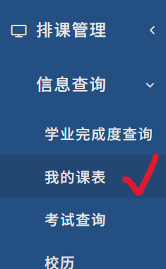
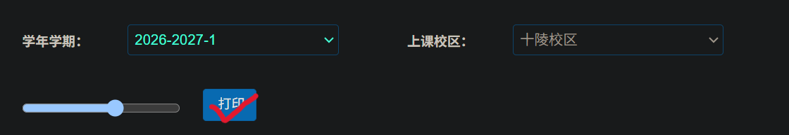
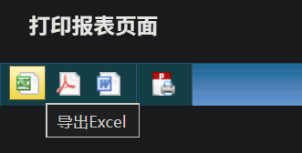
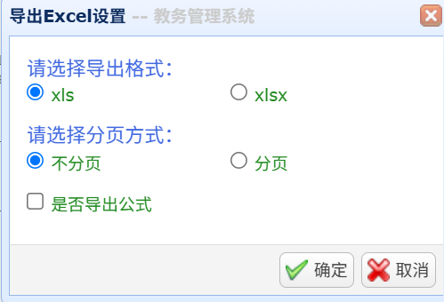
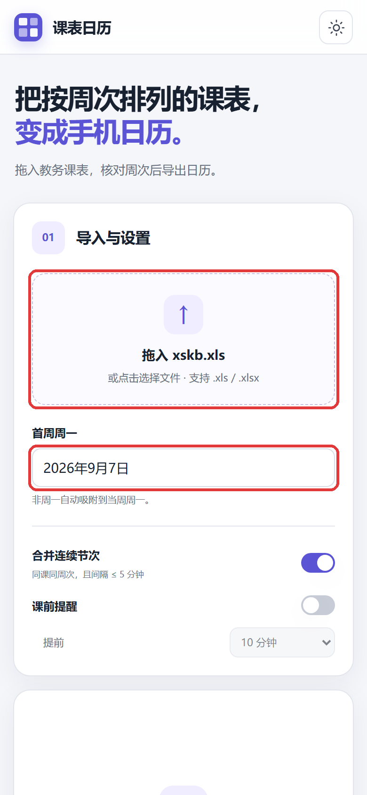
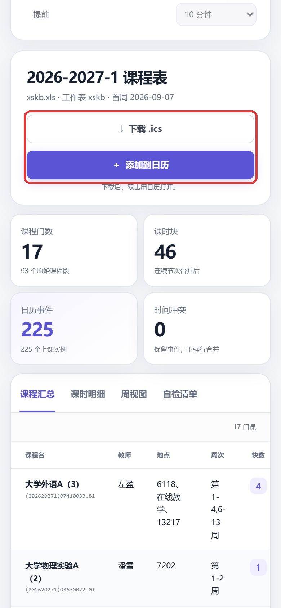
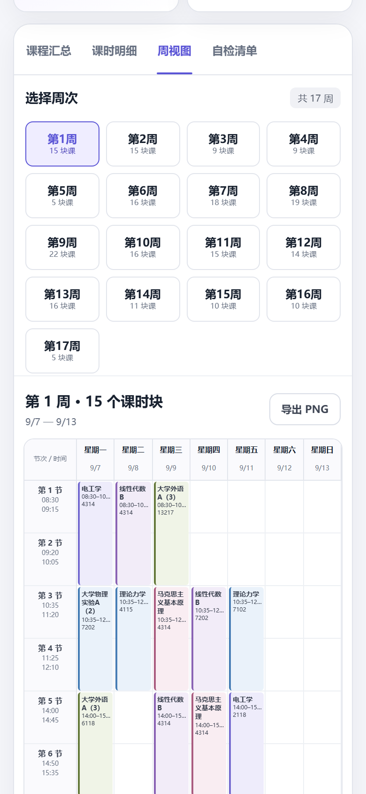

使用说明
从教务系统的课表，到手机日历里的日程，一共五步。
1
打开教务系统，导出课表
用浏览器打开 szjw.cdu.edu.cn，用学校账号登录，然后按下面四张实拍图的顺序操作：左侧菜单点「我的课表」→ 选好「学年学期 / 上课校区」，点「打印」→ 在打印报表页面点「导出Excel」→ 选 xls、不分页，点「确定」。




按图里的选项来：格式选 xls、分页方式选不分页，不要勾「是否导出公式」。导出的文件就是 xskb.xls。
2
把文件拖进网页
回到工具页，把刚导出的 xls 拖进红框里的上传区；手机上没有拖拽，点一下那块区域选文件就行。导入后「01 导入与设置」里会显示文件名和大小。

红框 ① 是上传区，红框 ② 是首周周一。
3
核对首周周一
默认是 2026 年 9 月 7 日。开学第一周如果不从这天开始，点日期框改一下；选了非周一的日期，会自动吸附到那一周的周一，下面会出一行提示。
顺手看一眼统计：这门课表应该是 17 门课、46 个课时块、225 个日历事件、0 个冲突。数字对得上再往下走。
4
导出日历
电脑上点「下载 .ics」，双击文件用日历打开；iPhone 和 Mac 点「添加到日历」，会直接弹系统日历的导入界面。

iPhone 上如果打开后只看到一串文字、没有弹出日历，就改用「下载 .ics」，再去「文件」里点开。
5
在手机上导入
- iPhone：下载后在「文件」App 里找到 .ics，点一下，选「添加到日历」。
- 安卓：下载后在文件管理器或浏览器下载列表里点开，选择用系统「日历」打开。
- 导入后打开日历，随便点一节课，核对上课时间、地点和提醒。
不确定排得对不对？先看周视图
点「周视图」，再点第几周，那一周的课表就按七天排在一屏里。切换周次就能检查单双周、前半学期后半学期有没有错。

常见问题
- 导入后日历里出现两份课表？
- 先把上一版删掉再导入。同一份表重复导入会叠加，不会自动覆盖。
- 「需要留意」提示地点为空？
- 教务表里那一格本来就没写地点，日历照常生成，只是地点空着。
- 时间冲突是什么？
- 同一时间排了两门课。工具不会强行合并，会单独列出来让你核对。
- 课表会被上传吗？
- 不会。解析和生成都在你自己的浏览器里完成，页面不联网，也不保存数据。
- 换学期要改什么？
- 改「首周周一」就行，周次会按 17 周重新往后排。